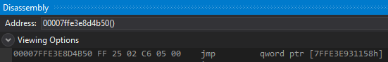

# x64 Inline Hooking
Links
• http://kylehalladay.com/blog/2020/11/13/Hooking-By-Example.html
Examples
• https://www.unknowncheats.me/forum/1223255-post2.html - Always uses 14 bytes. No length disassembler.
• https://www.unknowncheats.me/forum/c-and-c/134871-64-bit-detour-function.html - Uses length disassembler
x64 inline hooking has a few more difficulties with it than x86,
and is therfore mostly about choosing the right hook method for the function you're trying to hook.
For techniques, refer to Hook Methods > x64
For examples of x64 inline hooking,
refer to the sub nodes here.
## The difficulties of x64
### You can't rely on E9 jmp relative anymore
The classic technique in 32bit hooking is to a use a 5 byte
E9 jmp relative instruction to jump to the trampoline space. From the trampoline space, you can then jump to the hook code.However, the jmp relative instruction is limited to a + or - 2GB range.
On 32bit this isn't a problem, as 4GB covers the entire available address space on 32bit machines.
But on 64bit machines, the address of our trampoline or hook code might be more than 2GB away from the target function we're hooking, so an
E9 jmp relative instruction won't jump far enough to get us there.Therefore, it's only possible to use an E9 jump on x64 if you can find free memory
within a + or - 2GB range from your target function's address.
Refer here for a function to find free memory within a 2gb range:
Useful > Find Memory within 2gb
If you find free memory within a 2gb range,
you could assign trampoline space there and jump to where to wherever you want.
### Function prologue code varies in length
On x64, the function prologue code for different functions varies quite a bit.
This is well explanied here:
https://www.codeproject.com/articles/44326/minhook-the-minimalistic-x-x-api-hooking-libra
at the Building the Trampoline Function heading.
For example:
Here's user32.dll's MessageBoxA on x64
A lot of the functions in kernel32.dll are jumps, but they vary in length.
Here's kernel32.dll's IsProcessorFeaturePresent on x64
Here's kernel32.dll's CreateFileA on x64

Here's kernel32.dll's GetCurrentProcessId on x64

You get the idea.
The solution is to use a disassembler.
You can build hooks without a disassembler,
but you will have to craft and check that the hook works for each individual hook you install.
For example:
• https://www.unknowncheats.me/forum/1223255-post2.html
With a disassembler, you can analyse the instructions at the function
and build a hook according to the bytes at the original function
e.g. fill extra bytes with NOPs, fix relative addresses in your trampoline, etc.
This is well explanied here under the Code Relocation heading
https://www.codeproject.com/Articles/1100579/PolyHook-The-Cplusplus-x-x-Hooking-Library
Examples of using a disassembler:
• https://www.unknowncheats.me/forum/c-and-c/134871-64-bit-detour-function.html - Uses BeaEngine to chech instructions length
• https://github.com/TsudaKageyu/minhook - Uses hde64
• https://github.com/stevemk14ebr/PolyHook_2_0 - Uses Capstone